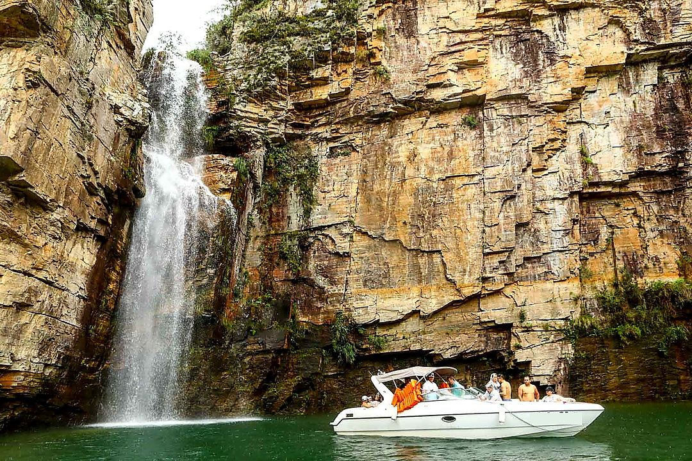
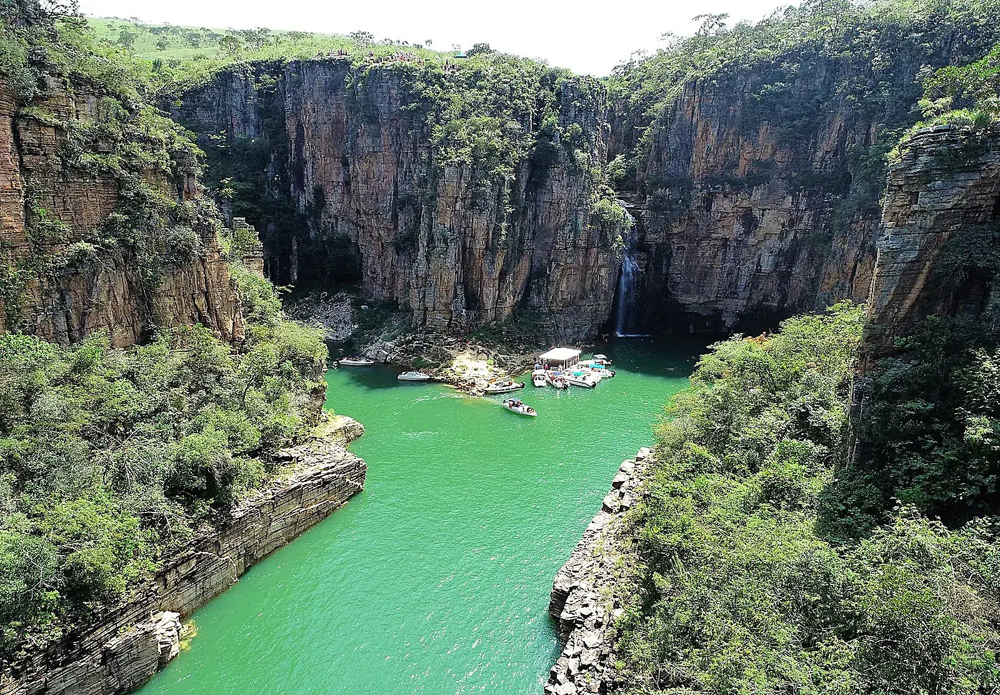
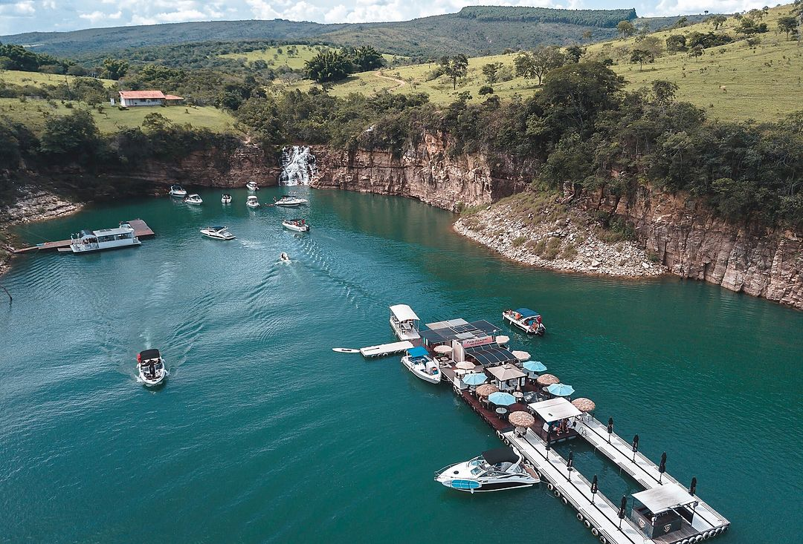
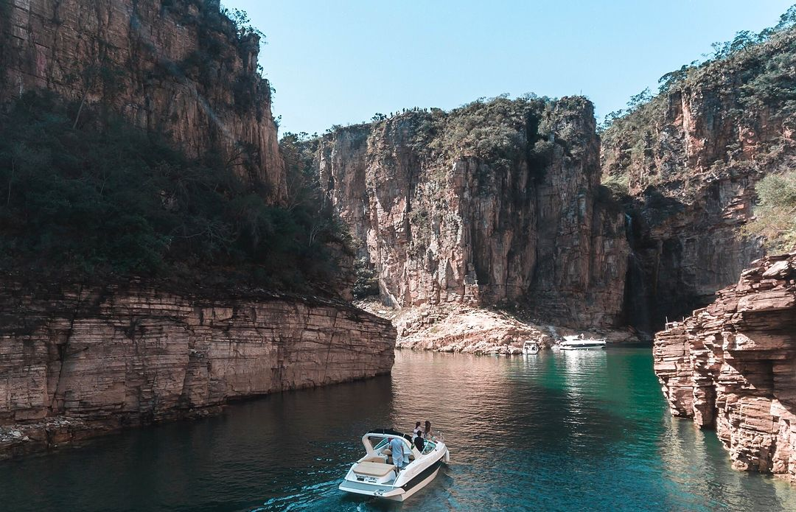
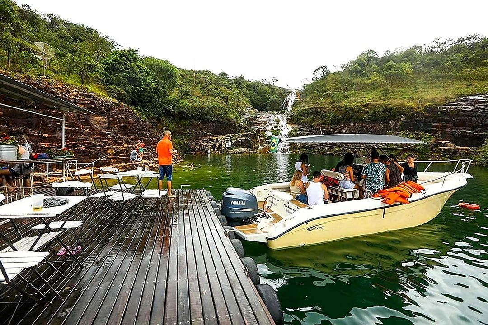
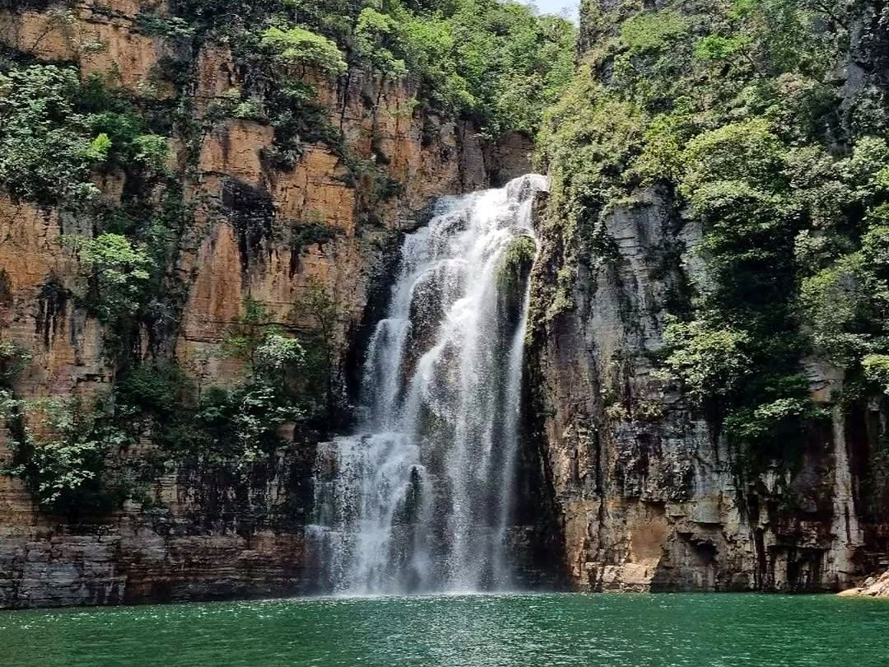
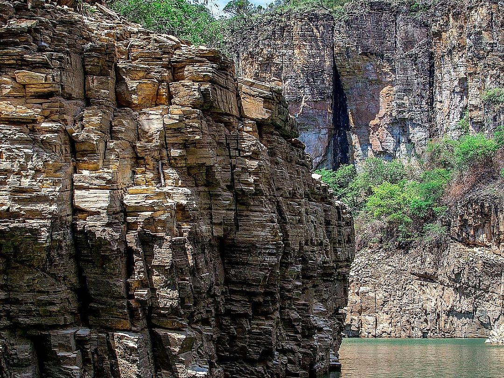

Parada 1
Cânions de Capitólio
Paredões altos e cachoeiras, vistos de perto.

Cânions, Lagoa Azul e Vale dos Tucanos, saindo da Ponte do Rio Turvo.
Saída pela Ponte do Rio Turvo, no Lago de Furnas.

Paredões altos e cachoeiras, vistos de perto.

Água verde e calma para o banho e as fotos.
Enseada tranquila entre as rochas.
Privativa ou compartilhada, você escolhe.
Passeio tranquilo para a família.
Mais espaço para grupos maiores.
A mensagem vai preenchida para o WhatsApp.




Da Ponte do Rio Turvo (Recanto Só Nata), em Capitólio - MG.
Lancha, barco e escuna. No WhatsApp você escolhe a que combina com o seu grupo.
Pelo WhatsApp (35) 99844-2701. O atendimento é 24 horas.